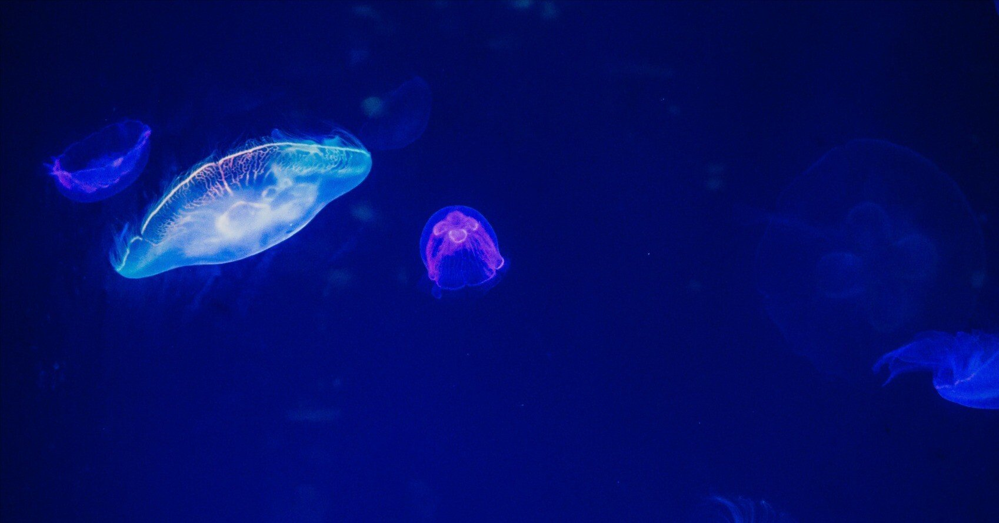

私たちはきっと、知りたいことも知れずにいなくなっちゃうんだよ。
君と別れることになった夜。羽田空港の保安検査場前で、そんなことを言われた。
昨日のような今日がこの先も続いていく。そう信じていた僕にとって、今でもその言葉は、どんな｢さよなら｣よりも心に残っている。
あれからもうすぐ5年が経つけれど、君はまだ日本に帰っていない。
携帯電話を落としたのは、25歳の春。
あの頃は生きることが面倒だと思っていて、平凡な会社の事務職として働いていたものの特段趣味や楽しみもなく、ダラダラと日々をやり過ごしていた。
そんな時にすみだ水族館に行ったのは、大げさに表現すると、これからの自分を鼓舞するためでもあった。
幼少期から人とのコミュニケーションが苦手で引っ込み思案なところがある僕は、社会に出ても相変わらず交友関係が狭く、休日も誰に会うでもなく家で寝腐っているか、大して面白くもないゲームや漫画に興じるだけ。そんな暮らしは楽ではあったが、決してワクワクもしなかった。だから、ある時「死ぬまでにしたいこと」を紙に書いてみることにしたんだ。
「死ぬまでに」と書くと、余命幾許もないように思われそうだが、もちろんそんなことはない。当時も今も、何ひとつ病を患っていない、健康体そのものだ。
これは要するに「将来したいこと」リスト。この命にはまだまだ未来があるはずなのに、ついこんな言い方になってしまったのは、未来に対してあまり希望を抱いていなかったからだと思う。だから当時の僕は、「死ぬまでにしたいこと」と言うようにしていた。
そのうちの一つに「すみだ水族館に行ってみる」と書いていた。
なぜすみだ水族館なのかといえば、ほかでもない。紙に書き出した中に「東京スカイツリーを間近に見る」というのがあったから。
すでに開業して10年以上が経つというのに、東京の顔ともいえるスカイツリーを生で見ていないのは、都民の端くれとしてあってはならないと勝手に思い込んでいた。
そんな、懐疑的な志でその周辺の施設について調べていたら水族館があることがわかったので、それなら行ってみようと思ったのである。
僕はあの、まるで水中を漂っているかのような空間が昔から好きだった。
同じ人間が作り出している「社会」という水槽よりも、大小さまざまな水の生き物たちが共生し、自由に泳ぎ回る世界に生きてみたいとも思ったことがある。そこにはきっと、国境も言語の壁も、ましてや社会的制約なんてないのだろう。それがたまらなく羨ましかった。
「いいですよね、クラゲ」
それは、あの紙に書かれた「死ぬまでにしたいこと」リストの通りに手順を踏んでいた、ある日曜の昼下がり。
東京の息吹を存分に感じたスカイツリーの観光後、僕はすみだ水族館で多くの水中生物を見て回っていた。そして、一通り全部回りきり館内から出ようとするものの、やはり再度見ておきたいと、僕は多くのクラゲがたゆたう水槽の前にいたのだった。
この水族館のクラゲエリアには、他館にはない特徴がある。
それは、目の前にある水槽のみならず、今僕がいる足元にもクラゲが漂っているということ。そう、足元はガラス床デッキになっており、来館者はまるで海面に立っているような感覚に陥るのだ。
こんな幻想的な空間にいれること、日常ではまず体験できない。僕はそんな非日常に惹かれて、またここに舞い戻ってしまっていた。
……疲れているのだろうか。昨日はよく眠れたはずなのに。
そうして、無性に僕の心を掴んでくるその生物たちに見惚れていると、ある人が何度かそう言っている。
あの瞬間はすっかり頭が空っぽだったものだから、それが自分に向けられた言葉だと思うまで、かなりの時間を要してしまった。
「いきなりごめんなさい！」
そう言われ、やはりその言葉は自分に向けて投げかけられたものだとわかる。
声のする方を見ると、こざっぱりとした格好の女性が僕の真横に立っていた。肩まで伸びた暗い茶色の髪に印象的な瞳。一目見たところ、同世代に見える。
「こっちこそ。ちょっとぼっとしていて」
ようやくそんな言葉を口にする。彼女はようやく安心して、はにかんでみせた。
「クラゲって、実際には人に毒を刺すのに、見る分には心を癒してくれる。不思議な生き物です」
「確かに。お好きなんですか」
「生で見るのは初めてだから、どうだろう」
その言い方に少し引っかかるも、初対面の人にずけずけと何度も質問するのはどうかと思うから、「そうですか」とだけ言ってみる。
しばし、沈黙が流れる。彼女の目的は何だろうと思いながらも、僕はあくまで一人でクラゲを見に来たのだから、いつこの場から離れても構わないはずなのに。中々それができない。もちろん、彼女が横にいるからだ。
「中には毒のないものもいるみたいですよ。例えば、ほら」
沈黙が気まずくなって、僕は目の前を漂う、あるクラゲを指差す。
それは、よく想像される無色透明な姿ではなく、青が印象的なクラゲだ。しかし、この種は実に多くの色を持つ。たまたま指差したのが青色であっただけで、ほかにも赤や黒、白といった仲間も存在する。まるで、彼らの神秘性をより引き立てているような性質だ。
「これはカラージェリーフィッシュといって、毒を持たないみたいです。寿命は半年くらいで、平均よりは短いみたいですけど」
「へぇ」
そう言って、彼女は水槽に近づいて手を伸ばす。その指でクラゲをなぞる姿が、なんだか現実に思えなくて、つい目が離せなくなった。
「ねえ、これは？」
彼女に聞かれ、我に返る。
その先には先ほどのとは違って、かなり長い触手を悠然と漂わせながら、黒とオレンジが混ざった、艶やかな色合いを見せる生物がいた。
「えっと……ブラックシーネットルで世界最大のクラゲらしいです。5m以上成長するのもいるらしくて、強い毒も持っているようです」
「寿命は？」
間髪いれずに聞かれる。その反応速度に思わず笑いそうになりつつ、僕はさっきから目線を落としているクラゲ図鑑のページを繰る。
僕はハナからクラゲに明るくない。ただ、水族館に行ったら何に惹かれるだろうと考えた結果がこれだったから、それなら知識をある程度つけておこうと思いコンパクトな「クラゲ図鑑」なる本を片手に、ここにやってきたというわけだ。
「すみません、この本には書いてないですね。さっきのは書かれていたんですけど」
「きっと長生きだと思います。憎まれっ子世にはばかる。生物学的にはまるで違うけど、多分それは人間と一緒ですよ」
彼女は強い口調で断定した。
そうかもしれないと、頭の片隅で考える。もちろん、毒性の有無と寿命の因果関係について、今の僕はその知識を持ち合わせていないのだから根拠はない。でも不思議と、目の前にいる彼女に力強く言われると、恐らくそんなものなんだろうと思えてくる。
「あの、お一人で来たんですか」
「あっ、そうです。ええっと」
そうして何となく様子を窺われ、「僕もそうです」と返した。
いつしかこの、現実から浮遊しているようなこの時間を、もう少しだけ味わっていたいと思っていた。
「自分で言うのもなんですけど、私って毒性がないんです。だから、早く死んじゃうのかなって」
彼女は無理に笑ったような顔で呟く。僕との視線を外して、彼女は再び水槽に目をやっている。
なんだか、彼女が儚い存在のように見えてしまう。姿は大人のはずなのに可憐な少女のようにも思えて、僕はいたたまれない気持ちになった。
「僕も同じく、毒のない人間だと思ってます」
すると、彼女はまたこっちを見た。それがやっぱり嬉しくて、その先も必死に言葉を紡ぐ。
「でも、無毒なこと自体が、誰かにとって毒になり得ることもあるかもしれない」
「それってどういう……」
「例えば、自分にとって。周りは多かれ少なかれ持っているものなのに、自分にはそれがない。そのことを引け目に感じたり、もしくは無理に毒を持とうとして、自分らしく泳ぐことすら忘れてしまったり」
普段は口にしないような抽象的な言葉ばかり言っていた。自分でも何をどう考えてそう話しているのかわからなくなり、思わず俯く。
「例えば、こんなクラゲのように」
すると、彼女はさっきの大型種を指差した。彼は僕たちがそんな会話をしていることも露知らず、相変わらず優雅に水中を漂っている。
「『コイツは俺の持っているものがないから張り合いがない。俺とは違う世界の住人だ』。そうして、自然に分類されちゃう、みたいな」
彼女が必死に僕の言葉についてきてくれている気がして申し訳ないと思いつつも、その顔はなんだか嬉しそうに見えた。
すると、彼女は我に返ったような顔をした。「すみません。私のせいでお邪魔しちゃいましたよね。ちょうど帰るところだったんで。勝手に声をかけといてなんですが、私はここで」
「いやいや、こっちこそすみません」
なんとかそう言うと、彼女は突然の別れに戸惑う僕をよそに背中を向けた。
なんだか居ても立ってもいられなくなり、その後ろ姿に声をかける。
「あの、すみません」
ついつい、“すみません”を連発してしまった。
もちろん、後者は彼女を呼び止めるための言葉。日本語はややこしい言語だと思うが、彼女はちゃんとこっちを振り向いてくれる。
「なんていうか。凹んでいることあったら、このクラゲたちを思い出してあげてください。きっと、癒してくれると思います」
「なんだか、ここの飼育員さんみたいですね」
そうして、彼女はまた笑って言った。「やっぱり、もう少しだけ見ていきます」
再び水槽に向き合う彼女を見て、僕の役割は終わったように思えた。
それに、この一連の流れが急に恥ずかしくなってしまい、「それじゃあ、先に帰ります」とだけ言い残して、小走りに彼女の前から去った。我ながら、自分はこうした場面に不慣れだなとも思う。
一体、あの時間は何だったんだろう。
家に帰り、そんなことを思い出しながら自宅でくつろいでいると、ふとあるものがないことに気がついた。
それを入れていたはずのジーンズのポケット。何度手を突っ込んでみても手応えがない。もしやと思い、自室を出てリビングにいる母に携帯を鳴らしてほしいと頼んでみる。
「あんた、また失くしたの！？」
母は案の定、僕の失態を咎めるような口ぶりだ。
はぁ、就職したタイミングで一人暮らしを始めておけばよかった。今や完全にその機会を逸していることに、またも後悔する。
「説教は後で聞くから、早く鳴らして」
そう言うと、母はため息をつきつつもLINE通話をかけてくれたようで、あの聞き慣れた発信音がリビングにこだまする。
何コールかしてみるものの、リビングにも、そして2階の自室に戻ってみても着信音は聞こえてこない。嫌な予感がしつつもそれを振り払いながら探していると、やがて階下から母の声がした。
「ちょっと。誰か出たよ！ この人、知り合い？」
ウソだろと思い、僕は階段を駆け下り、母から携帯を受け取って恐る恐る声を出した。
「も、もしもし」
「すみません、勝手に出てしまって」
聞き覚えのある声に、すぐに思い至った。
やはり、僕はあの水族館で携帯を落としたらしい。昼間の彼女の声が耳元ではっきりと聞こえる。
「警察に届け出ようと思ったんですけど、ちょうど電話がかかってきたから出ちゃいました」
「こちらこそ、すみません。もしよかったらお近くの警察署で構いませんので届け出てもらえますか。後日、その警察署まで取りに行きますから」
「もしよかったら……」
オウム返しされ、直感的に彼女を怒らせてしまったと思う。「そんな時間、私にはない！」そんな言葉が連なるとも思った。
「直接お返ししたいので、どこかでお会いできませんか？」
予想外の反応に、僕は黙り込んでしまう。同じ沈黙でも、電話だとその中にどんな感情が込められているのか伝わりづらいから、余計やっかいだ。
「すみません。『そんな時間ない！』ということでしたら、おっしゃる通り警察署に届け出ますので」
2日後。
彼女と待ち合わせをしたのは、スカイツリー近くにある、よく知られたファミリーレストラン。まさか、「死ぬまでにしたいこと」の一つ、「スカイツリーを間近に見る」をこんな短期間に2回も達成してしまうとは。人生って何が起こるかわからない。
彼女は約束の時間を少し過ぎる頃に姿を現した。
平日の夜にも関わらず、それにきっと仕事終わりだろうに、彼女は二つ返事でOKを出してくれた。だから、こんな遅れはまったく気にしていないのに、
「遅刻してしまいすみません！」
と、席に着く前に勢いよく謝ってきた。
「全然気にしてないので、頭上げてください」と、僕も立ち上がる。本来なら、僕が頭を下げて携帯を拾ってくれたことを感謝すべきところなのに。
そんな彼女の姿は、初対面の時よりも明らかにおめかしをしていた。仕事があったからだろうと、すぐに察しはつく。
一昨日はきっと単独行動前提だっただろうから、ほとんどノーメイクだった気がする。でも、僕は水族館の時の彼女の方が綺麗だと思ってしまった。そんなこと、口が裂けても言えないけれど。
ようやく顔を上げてくれた彼女は、席に着くなり「すみませんでした。携帯ですが、これですよね？」とテーブルの上に僕のスマートフォンを出す。
「念のため確認します」と、そのスマホを受け取り指紋認証でロックを解除、中身を確認する。間違いなく自分の携帯だった。
「ありがとうございます。僕のです。色々とご迷惑をおかけしてすみませんでした」
「いえいえ。こちらこそ、直接渡したいだなんてワガママ言って」
そうして、しばし沈黙が流れた。
彼女とはすでに何度この時間を過ごしたのだろう。でも、その全部が僕にとっては嫌な感じがしなかった。よりよい瞬間を迎えるための、前向きな助走のようにも思えるからだ。
「もしよかったら、この後ってお時間ありますか」
言うと、彼女は「えっ」と困惑した顔を浮かべた。その反応を見て、僕は慌てて訂正する。
「いや、そういうことじゃなくて。……いや、そういうことではあるんですが」
ここでも日本語のややこしさにがんじがらめになる。もう少し親切設計にしてくれよと、僕は脈々と受け継がれてきた日本語につい文句を言ってしまう。
「携帯を届けてくださったので、何か奢りますよ。いや、なんか偉そうだな。お願いです、何か奢らせてください！」
そう言って、横にあるメニューをすぐに広げて見せると、彼女は笑った。
その目もちゃんと笑ってくれているから、僕は心から安心する。
「じゃあコーヒー一杯だけ」
「それだけでいいんですか？ オムライスでも、ハンバーグでも何でもいいんですよ？」
「私、そんなにわんぱくじゃないです」と、彼女はやっぱり笑っている。
そうして、僕も同じブラックコーヒーを頼んで彼女と話した。
僕より一つ年下で、岐阜出身のアパレル店員。昔から服が好きだったから、大学卒業後に上京し、その職に就いたということ。確かに彼女の服装は、僕の語彙力では到底表せないほどおしゃれだった。今日も、さっきまで着ていた春用のトレンチコートが様になっていたし。そして、名前は|紗月《さつき》というらしい。
僕も簡単に自己紹介をする。
25歳の会社員。僕は彼女のように昔から好きなものなんてなかったから、最近好きになった歌手について話してみる。すると、彼女もどうやらファンみたいで、その話で盛り上がった。
その後、名前が|匠海《たくみ》だと伝えると、彼女は「私たち、海と月でクラゲですね！」とはしゃぐように言った。
それからいくつか、同世代ならではの話やお互いの学生時代について喋っていたら、みるみるうちに数時間が経過していた。腕時計を確認すると、23時になろうとしている。
「お時間、大丈夫ですか？」
「もうこんな時間なんですね。なんだかあっという間で」
そうして、彼女は伝票を持って「今日は呼び出しちゃったんで、私持ちにさせてください」と頼んできたのを遮って僕は言っていた。
「また会えたりできませんか？ 『そんな時間ない！』ってことなら、すみませんが今回は紗月さん持ちでお願いします」
冗談なんて久々に口にしたものだから、これが失礼なジョークなのかもわからなかった。でも、目の前にいる彼女はただただ笑ってくれていた。
「じゃあ、今日は割り勘ですね」
そうして、僕たちの時間が始まった。
それは週に数回の時もあれば、数ヶ月に一度のこともあった。新しい季節が訪れるたび衣替えするのは相変わらず面倒だったけど、その代わり彼女のワンピースやカーディガン姿を見るのが楽しみになった。
それに、これまでの人生一度も入店したことのない海外アパレルショップに連れられては、彼女は僕のファッションを定期的にアップデートしてくれた。彼女の隣にいるだけで、確実におしゃれになっている。それがなんだか生まれ変わっていくような感覚があって、少しだけ自分に自信を持てるようにもなった。
時には背伸びして隠れ家的なフレンチや回らない寿司屋に行ってみたりもしたけれど、やっぱり僕たちのオアシスは気心の知れたファミリーレストランだった。
それはまるで大学生のような雰囲気でドリンクバーの列に並び、そしてテーブルに着くなり「この前さぁ」と話し出す。それが、次第に僕たちの日常になっていった。
「この前さぁ、こんなのを見つけたんだ」
そして、僕は数年前に書いた「将来したいこと」リストを紗月に見せる。
僕たちは飽きもせず、スカイツリー近くのファミリーレストランにいる。今日は昼に集まって、さっきまでスカイツリーの展望回廊の空中散歩を楽しんできたばかりだ。
「なにこれ、面白そう」と、彼女はそれを純粋な目で見ていた。そして、自分もやってみたいと言われた時には、思わず耳を疑ってしまった。
「紗月はしたいことしてきた人生じゃないの？」
「そんなことないよ。むしろ、したくないことばかりして、ここまで来ちゃった感じ」
彼女は寂しそうな表情をする。あの時の水族館と同じ顔。あれ以来見ていなかったから、それがとても懐かしいようにも思える。
「昔から愛想だけはよくてさ。周りの顔色ばっかり窺って、みんなの求める紗月ちゃんを演じてきただけなの。かれこれ20年以上もこんなことやってきたけど、もうそろそろやめようかなって」
そして、紗月は再び笑顔になって言う。
「今日家に帰ったら、私も作ってみる。『将来したいこと』リスト！」
あの時の僕は、過去の自分が書いたその紙が、まさか紗月との別れのきっかけになるとはまったく思っていなかった。
それもそうだ。いつしか、僕の面白くもない日々はすっかり彼女の色に染まっていたのだから。その笑った顔をいつまでも見ていたい。それが僕の生きる意味になっていたんだ。
それから数ヶ月が経った頃。
「来月からイギリスに住むんだ」と、彼女は唐突に言った。それは、紗月が拾ってくれた携帯宛の電話で告げられたことだった。
勤めているショップの店長から、向こうの有名アパレルブランドの店員として働いてみないかと誘いがあったようだ。その店はそのショップの姉妹店らしく、人材交流の一環として、紗月に声がかかった。
彼女は悩んだ末に渡英することを決めた。その決め手は、「将来したいこと」リストに書いていた「どんな場所でも好きなことを続ける！」の一言だったらしい。
「そんな素振り、全然なかったから」僕は驚きながら、なんとか言った。
「あの日、もう人生ダメだと思っていたの」
彼女は彼女らしく、明るく言った。
紗月がさっきから何を言っているのかわからない。もちろん言葉としての意味は理解できるけど……でも、唯一わかることがある。それは紗月の言う「あの日」が、僕たちが出会った日だということだ。
「だから、一人でクラゲ見に行ってさ。その時、見るからに心奪われている匠海を見て、こんな風に何かに夢中になれるのって羨ましいなって」
「そんなに夢中だった？」僕はなるべく動揺を隠しながら話す。
彼女はこくっと頷いたような間の後、「口なんて半開きで、心ここに有らずって感じだったよ」と優しい口調で言葉を繋いだ。
「思わず声をかけちゃったの。何を考えているんだろうって。そしたら、何も考えてなかったから笑っちゃった」
「確かに、紗月と出会った時の僕は、何一つ頭が働いてなかったね」
「それでも、別れ際言ってくれたこと忘れてないよ。凹んでいたらクラゲ思い出してって。その言葉に、なんでかぐっときて。そしたら、匠海が走り出して、勝手に携帯落として。すぐに追ったら返せたんだろうけど、でも追いかけなかった」
「なんでよ、追いかけてよ」
そしたら、彼女の笑い声が耳元で聞こえた。「もしそうしてたら、こうして今も会えてないじゃん」と言われ、そりゃそうかとも思う。
「こんなに着飾って、毎日のメイクに何時間もかけて。そうしてようやく当時好きだった人に振り向いてもらえたのに、私の心は裸のまま。そんなんだったから振られちゃったの。でも、心までうまく着飾ったら、それは本当の私じゃない。好きな人の横にいれたとしても、それはもう自分の好きな私じゃないから」
彼女と出会って2年が経っていたのに、そういう話をしたのはこの日が初めてだった。僕は未だ紗月に気持ちを伝えられていなかったから、心のどこかでそんな会話をするのを避けていただけだったのかもしれない。
「永遠に眠っていたいと思って何時間も眠ったら、なぜかクラゲの夢を見たの。夢の中で、ふわふわと水に浮いていて、いいなって。こんなにゆったりと漂っていられたら、きっと幸せなんだろうなって。夢から覚めて、お腹が空いたから冷蔵庫にあるものでちょっとした料理を作って、お腹を満たして。その後はお気に入りの映画を観て夜を過ごして。そして翌朝、本当のクラゲを見たいと思って行った水族館に匠海がいて」
僕はその語り口に泣きそうになっていた。紗月の震えた声色を初めて聞いたからなのか、別れの時を確信してしまったからなのか、今でもそれはわからない。いや、きっとその両方だったのだと思う。
｢匠海は暗がりの未来を照らすサーチライトだったんだ。出会えてよかった。何も着飾らない私を受け入れてくれたのも匠海だけだった。本当に嬉しかった」
どうしても言葉が出てこなくて、「ねえ、聞いてるの？」の彼女の声になんとか泣き声を抑えながら、僕はようやく「うん」とだけ言った。それしか言えなかった。
「人って、自分以上に大切な人がいたら幸せなんだと思う。私にとって、その人は匠海だったんだよ」
紗月がイギリスに行ってから、僕の「死ぬまでにしたいこと」リストに新しく追加されたものがある。それは、紗月にちゃんと気持ちを伝えることだ。
あの電話からひと月が過ぎようとしていた頃、紗月から送られてきた出国便の日時をもとに、僕は羽田空港に向かった。
「私たちはきっと、知りたいことも知れずにいなくなっちゃうんだよ」
保安検査場の前。僕と同じように出国者を見送る人が多くいる中、紗月はまるで僕の心にだけ問いかけるように語った。
「だから、一つでも多く知ってみたいの。この世界のことを」
それは、泳ぎにくいこの世界に嫌気が差して、紗月との時間にだけはしゃいでいる僕とは真逆の態度だった。
彼女は怖いながらも外の世界に出ようとしている。もっと世界を知って、まだ見ぬ誰かに出会って、よりよい場所を求めようとしている。それはまさに僕が羨んでいた、自由に生きることを希求する姿勢だった。
あの日以来、僕は彼女の言葉の意味を考えていた。
そして、その日がいつ訪れてもいいように、たとえ下手でもこの水槽の中で泳いでみようと思った。まさにこうしているこの瞬間も、その真っ只中。それが今の僕ができ得る、彼女に返せる答えでもあったんだ。
彼女から帰国の連絡があったのは、僕が34歳になる頃。
この間の変化といえば、ようやく一人暮らしを始め、安いミニカーを買って通勤電車から解放されたことくらい。しかしそれだけでも、僕は随分と息がしやすくなっていた。
ほかは何も変わらない。相変わらず平凡な会社員として、毎日を必死に泳いでいる。
最近ようやく人並みにできるようになったものの、まだ泳いだことのない場所は、恐らく僕の想像以上にあるのだろう。
クリスマスの夜。紗月を羽田空港まで向かいに行く。
空港なんて滅多に訪れるものじゃないから、自然とあの日を思い出した。今日も変わらず多くの人が往来するこの場所で、紗月は初めて出会った時のように僕を見つけてくれるだろうか。
高鳴る胸を抑えながら待っていると、やがて到着口にキャリーケースを携えて手を振る彼女が現れた。
より洗練されたその身なりに7年という歳月が過ぎたことを痛感する。でも、それは決して着飾っては見えない。あくまで自然体な彼女の変わらない笑顔に、僕は胸を締めつけられた。
あの頃と同じように他愛ない話をしながら空港のゲートを抜け、駐車場に駐めていた愛車に彼女を乗せ車を発進させた。
「そっか、もうそんなに経つんだ。そりゃ変わるよね」
紗月の声は初めて出会った時と変わっていない。24歳の頃と同じ、気兼ねなく話せた紗月のままだった。
「あっちで色々知ったんだ。自分の拙さばっかり目について、何度もめげそうになったよ。英語もそれなりにできると思っていたけど、やっぱり本場は違った。本当にイチからのスタートだった」
そうして、紗月は窓の外を見やる。
今晩はもしかしたら雪が降るかもと天気予報が言っていたけど、空はなんとか耐えてくれている。そりゃ、ホワイトクリスマスの方がロマンチックなんだろうけど、ドライバーにとって積雪した道を走ることほど怖いものはない。
「見違えているのかと思ってたけど、ほっとしたよ。紗月は紗月のままだ」
そう不用意に言ってしまったら、「これでも成長はしてるんです！」と声が飛んできた。それがおちゃらけた声だったので、僕は余計に安心してしまう。
「僕もこの7年、色々と知れたんだ。変わり映えしない人生でも見方を変えながら楽しんだり、紗月みたいに新しいことにチャレンジしてみたりして。そしたら、案外この社会も悪くないのかもって思えたんだよ」
そう言うと、彼女は「よかった」と呟いた。
なんだか僕たちは、「社会」という水槽の中を自由に泳ぐための欠けてはならない同志のようにも思える。
「でも相変わらず、容赦なく毒を刺されることもあるけどね。そうでしょ？」
そう聞かれ、僕はあることを思い出す。
「ねえ、知ってた？ 毒のあるクラゲって、死んだ後も毒が消えずに死体に残り続けるんだって」
「そうなんだ。さすがはクラゲ博士」
「所詮、付け焼き刃の知識だけどね。でも、それで知れたことが一つある」
「何？」
「憎まれっ子は死んでもなお毒を持って、僕たちはたとえ死んだとしても毒を持てない。“持つ者”と“持たざる者”。その歴然とした差に憤ったこともあった。でも、それは間違いだった」
彼女は僕の声に耳を傾けている。
そっと、僕たちの現在地を確かめようとしている。そんな様子が、横目からでも伝わってきた。
「毒のある彼らは、僕たちの生き方を知らないんだ。無毒は無毒なりの処世術があることを。もしかしたら、知ろうともしないのかもしれない。でも、僕たちなりの生き方が誇れるものであればあるほど、それを知らない彼らは損なんだよ。だから彼らもきっと、ある面では“持たざる者”なんだって」
紗月は黙って頷いている。思いの丈を喋る時、こうして邪魔しないようにしてくれることが、あの頃みたいに嬉しかった。
「あの水槽の前で僕たちが心奪われたのは、そうした違いを無意識に受け取っていたからかもしれない。それぞれ違うからこそ、それが個性になった。みんな同じじゃ居心地はいいだろうけど、それは多分、変わり映えのない日々を過ごすようなもの。だから僕は僕なりに、死んでも変わりそうにない自分を生きて、その生き方に誇りを持ってみたい」
「たくさん知ったんだね」
彼女は優しく言った。その優しさが、あの頃の何倍にも感じる今日のような日を、僕は心のどこかでずっと夢見てきた気がする。
「まだ知っておきたいこともある」
そうして、僕は静かに深呼吸して、この7年ずっと伝えようとしていた言葉を口にする。
「空港で別れてから今日まで、嫌というほど思い知った。この水槽はどこまでも広大で途方のないものだって。それは、この水の中を泳げば泳ぐほど。知らないことだって無数にある。だから、これからも一つでも多く、この世界のことを知りたいと思う」
その時、車のフロントガラスに雪の結晶がひらひらと落ちてきた。
紗月は変わらず僕の声を聞いてくれているが、降雪が始まったことには気づいているだろう。もう知らない。タイヤが凍結して動かなくなってしまっても、自分の言葉を止めることはできない。この沈黙を破ってでも、僕は紗月に伝えるんだ。
「もしかしたら、たとえこの人生で多くのことを知れたとしても、その全部を忘れてしまう日が訪れるかもしれない。それでも、やっぱり僕は、紗月を一番に知っていたいんだ」
恥ずかしくて、助手席に座る彼女の顔なんて見れやしなかった。
その間も、車の走行音と街並みから聞こえる喧騒は、絶え間なく続いている。ただ気にしていなかっただけで、この社会は断続的なんかじゃなく、ずっとこうして続いてきたものだと思えてくる。
やがて、紗月は「うん」と言った。その相づちが、僕の言葉を受け取ったという単なる意志表示なのか、それともその気持ちに応えられるという意味なのか、声色だけでは判然としなかった。
「私、昨日『将来したいこと』リストを読み返してみたんだ。そしたらね、『長生きして幸せになる』って書いてあってさ。匠海のと違って、本当に抽象的なことばっかり書かれてて。笑えたの」
そう言う彼女が、そこに書かれた内容を着実に叶えてきたことを僕はよく知っていた。それに、僕の「将来したいこと」は、今日の結末次第でガラッと変わってしまう、ということも。
「でもね、それがあったから、目標を失わずに生きてこられたのかもしれないって。だからこれからも、そのリストは私の指標になると思う」
そして、彼女は不意にカーステレオに触れた。数秒ごとにチャンネルを切り替えて「今に合う歌流れてないかなぁ」と、やはり紗月は明るく言う。
そしたら、あるチャンネルでちょうど歌い出しの曲が流れた。それを聞き、僕たちは思わず「あっ！」と声を上げてしまう。
ラジオから流れた歌。それは初めてお互いについて話したあの日、僕たちが揃って好きだと知った歌手の『ベーコンエピ』だった。
彼女は首をゆっくりと左右に振りながら、その歌に心を預けている。そして、無邪気な声で言った。
「ねえ。お腹減ったよ。ごはん食べに行こ！」
思わず彼女の顔を見ると、いたずらに笑っていた。
そのわんぱくさに僕は吹き出し、ウインカーを左に出す。「やっぱり紗月はわんぱくなんだよ」と本心を言って、僕たちの車はよく知るファミリーレストランに向かい走り出した。
ラジオからは変わらず好きな声が心を歌っている。まるで僕たちの心の声を代弁してくれているかのように。
雪の舞う隅田川を通り、やがて姿を現したスカイツリーの電灯は、あの日見た無毒のクラゲたちみたいにカラフルな色に染まっていた。